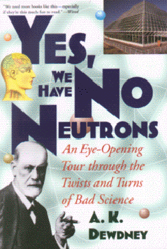

Yes, We Have No Neutronsby A. K. Dewdney
publisher: John Wiley & Sons
Non-fiction, 163 pages | 
(book cover art, Copyright ©1997 A. K. Dewdney)
Used with Permission. |
Return to the Book MenuPrevious|Next
Description:
A discussion of examples of bad science, from Sigmund Freud to Biosphere 2 to The Bell Curve. By discussing where science goes wrong, the author brings up ideas of how science should be performed.
Recommended for:People interested in "Junk Science." Students interested in increasing their "scientific literacy" so they can better evaluate science when they see it.
Did-you-read questions:
Deadline: February 1, 2005.
These should be easy questions, but you should have the questions ready and keep an eye out during your reading. Each question should be answered with 1-2 sentences.
Note: these questions are not probably not the most important part of the book! Your essay will not have to cover these questions!
- What Disney movie does the author compare to scientists in this book?
- What did the American Scientist temporarily steal to help disprove N-rays?
- What is an LQ test?
- What is the author's final solution to the Drake equation?
- Why did someone get to temporarily leave Biosphere 2?
Report Questions:Deadline: Peer Review Session on February 8, 2005; paper due February 10, 2005.
You should write a 3 - 4 page essay on one of the following questions. Your essay should include examples and references to the book, unless otherwise specified. Page number references are sufficient for citing material from the primary book. If you use outside materials, cite your sources in full. If you would rather write on a different topic, you may, but clear it with Mr. Howe or Ms. Sullivan first.
- Like other critics of junk science, the author has some strong opinions of his own. Do you disagree with any aspects of this book?
- In what ways are these examples of junk science similar? Do they share common aspects?
- How is the bad science of Sigmund Freud different in the way it was performed from that which was done by Rene Blondot? Which do you think was the more egregious error?
- The author mentions several situations in which critics of bad science have made their challenges in the wrong way, whether by missing the fundamental point or by using moral arguments, for example. What lessons can be learned from this?
Graphic and Presentation:
Deadline: February 21 - March 3, 2005.You will give a 10 minute presentation on both of the following:
- Convince your peers that they should (or should not) read this book. (This may include a brief summary of the book.) Give examples of what was cool or worthwhile in the book, and what you got out of it (or didn't).
- Describe a (realistic) science idea that you learned about in this book, citing information from at least 2 external sources (other than the dictionary). If you would like help choosing or understanding an idea from your book, you are invited to come talk to Mr. Howe or Ms. Sullivan.
Note: This presentation should not be just a reading of your paper!Along with this presentation, you should have a graphic that will go with it. A Power Point presentation is recommended, but if you have a special idea for a something else, such as a model, an original video presentation, or a well done drawing/ painting/ sculpture/ etc., you may do so, provided it involves a similar level of effort and polish. Speak to Mr. Howe or Ms. Sullivan first if you are considering an alternate graphic format to the Power Point.
Return to the Book MenuPrevious|Next